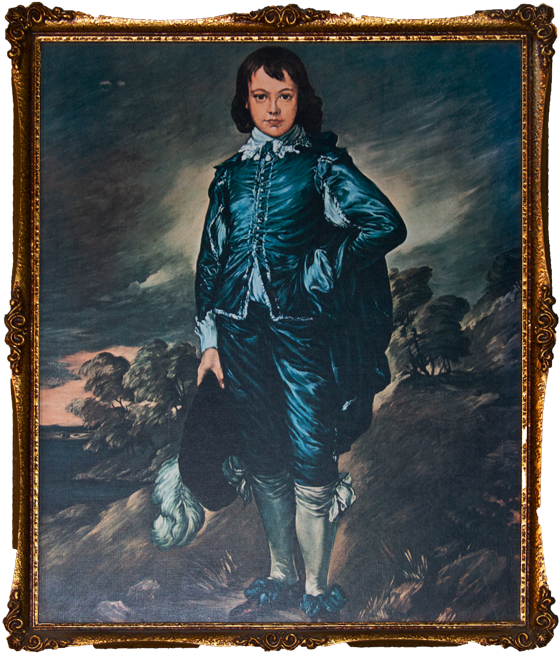

Index.
1. Blue Boy Print from my Grandad’s biggest storage shed in 2015
2. Drawing of two dogs playing from Coatesville Market
3. Owen, when he was an only child. 1999
4. Owen and me probably in 2000
5. Cross-stitch that Gran did for me when I was a baby. 2001
6. Embroidered art of a village, from my Grandad’s storage shed. 2015
7. Drawing of a terrier from Coatesville Market. $7
8. Granny Kath (the painter) and husband.
9. A watercolour painting of ships that Granny painted.
10. Whose Grandad is this?
11. Probably the third to last family photo taken of us. My mum kept the shirt Michael is wearing and now she puts it on her dog. Worrying? 2003
12. Landscape painting that Granny Kath did, probably acrylic or oil. She dropped out of Ilam because she hated being told what to paint.
13. A print from my grandad’s storage shed.
14. Drawing of a terrier from Coatesville Market. 2015.
15. Another print from my Grandad’s storage shed, he was an antiques dealer and a hoarder.
16. The red boy, a print from Grandad’s storage shed.
17. A cross stitch that Gran made for Michael when he was born. 2002.
18. Uncle Richard and Aunty Jo. 2000.
19. Three of my cousins, I can’t quite tell who. Could be Austin, Arna and Owen?
20. A print from my grandad’s storage shed.
21. Family holiday at Aunty Deb’s friend’s bach at the mount. 2012.
22. A print of “The Young Martyr” that I brought when I went to the Louvre in 2014.